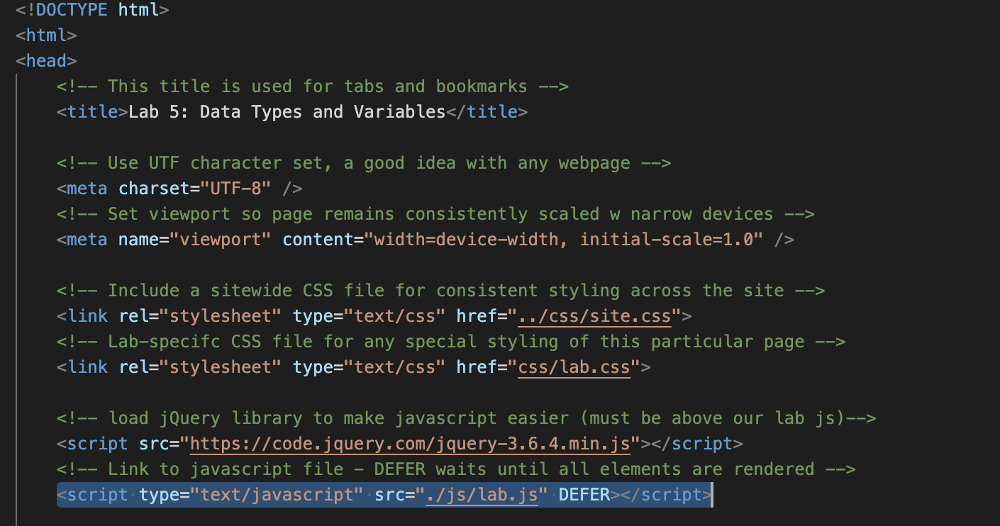
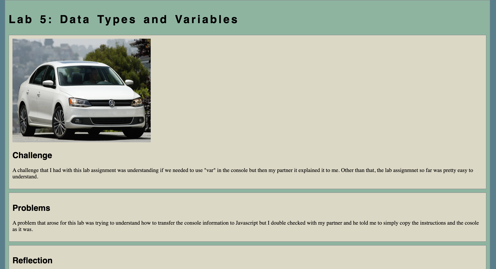
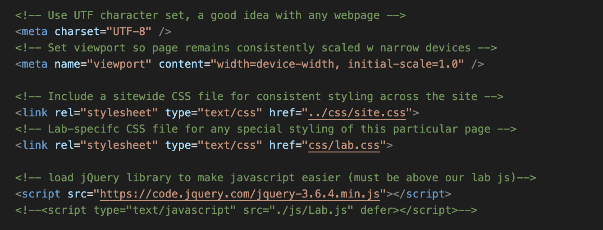
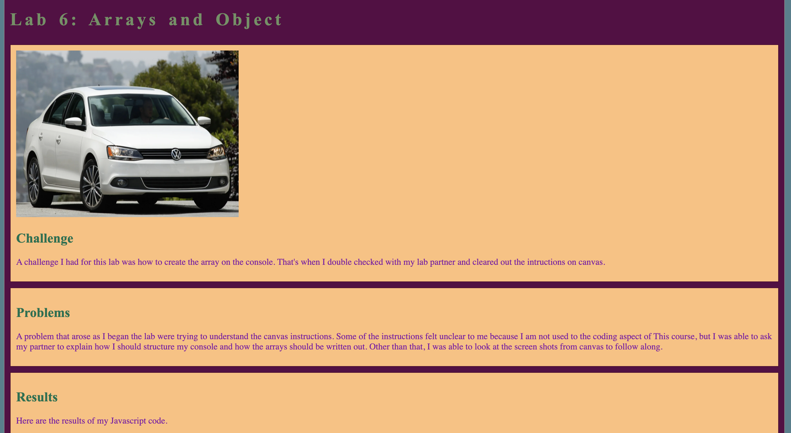
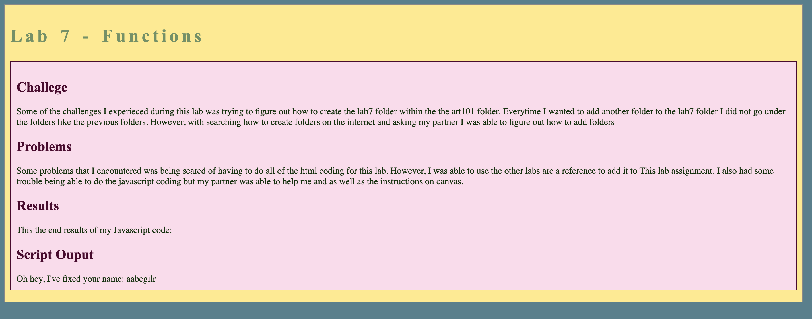
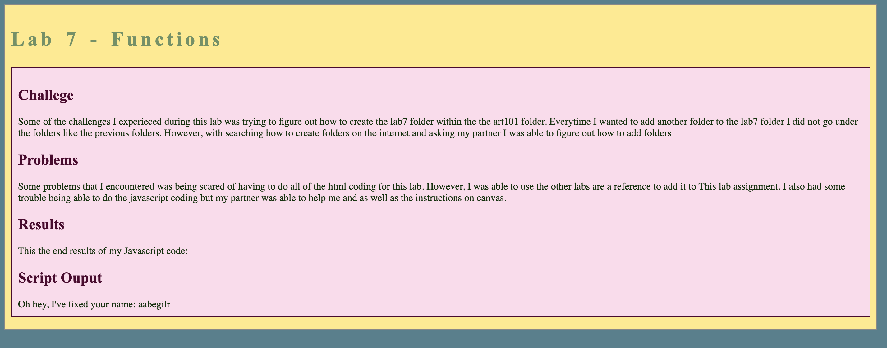

Lab 14 - Debugging Tools and Strategies
Challenge
The main challenge I had for this lab assignment was trying to find out how to find out how to fix my mistakes. It was pretty hard to understand the console because I am new to coding in general and so reading the console was confusing. Thankfully, lab partner was able to help me understand the errors and as well as going back to the lecture slides.
Problems
Something that I realized is that most of the errors that my past labs had were the same problem. Which at first made it confusing and frustrating because I was not sure what the problem was. But after my lab partner explaining what the problem was since he also had the same issue, it was an easy correction for all the labs.
Results
Here are the results of debugging previous labs:
Lab 5:
When the page first loaded, it seemed from the console that the Javascript function was operating without receiving any input. It nearly seemed like the code had already run once before the second time it was called, which caused it to function. I removed the script tag from the header portion of my HTML in order to fix issue. I did this since the output div section already contained a script tag that referenced the Javascript file. The HTML code had to call the Javascript file's functions twice since the script tag was present in both the header and output div.
 Lab 6:
This lab had the same problem as lab 5. The console was saying that the javascript function was running without an input as the web paged opened up. So what I did for this lab was just commenting out the script tag from my header in my HTML just like I did in lab 5.
 Lab 7:
The issue in this lab was the same as in lab 5. As soon as the web page loaded, the console reported that the javascript function was operating without an input. In order to complete this lab, I simply commented out the script element from my HTML header as I did in lab 5.
 
